The Countryside in April

Marsh Marigolds
April
If I were to choose a descriptive name for this month, I would choose The Month of Greening, for it is during April that there is this magical change to a verdant countryside. By the end of the month, most trees have at least started to unfold their leaves, grass and young corn have shot up and now wave in the breeze, whilst under the woodland trees the old leaves can no longer be seen for the lush new growth. Compare the photographs of the hawthorn taken at the beginning, middle and end of April, and see the fat flower buds just waiting to burst into white blossoms. As the snowdrop is the harbinger of Spring, so the Hawthorn or May blossom is the harbinger of Summer.
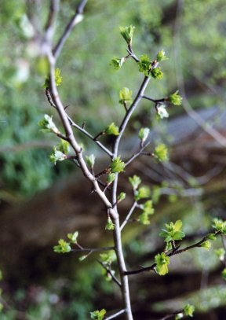
Hawthorn - Beginning of April

Hawthorn - Middle of April
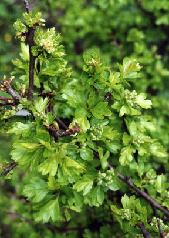
Hawthorn - End of April
Admire the butterfly like new leaves of the sycamore still not yet quite unfurled, and compare their ruddy hue with the pale delicate green of the young elm. Other trees have different greens the grey green of the White Poplar and Whitebeam and the yellow green of the narrow leaved willows and ornamental acers.
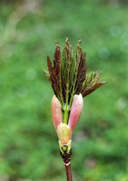
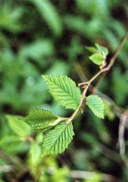
Sycamore and Young Elm
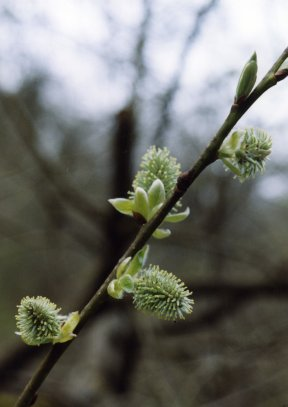
Willow (Female)
April is the month for the blackthorn to flower white blossoms on leafless twigs a spectacular sight. These flowers will eventually form the round dark sloes in October or November, which we will gather to make sloe gin and sloe wine. There is nothing so pleasant on a cold winter evening as to sit by the fire and sip sloe gin feeling its warming effect travel right down to ones toes! As long as there are no late frosts to kill the flowers, we are always assured of a plentiful harvest, but if a cold spell does occur during April, we refer to it as the Blackthorn winter, and know that the sloe harvest will not be so good.
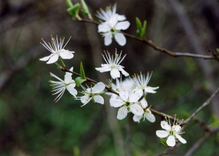
Blackthorn Blossoms
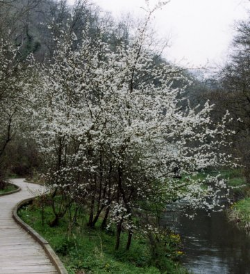
Blackthorn (Sloe Tree)
Perennial plants which had died down in the winter have produced new green leaves which will soon push up their flower stalks. In damp woodlands there can be masses of the garlic smelling Ramsons, or wild garlic, whose leaves can be dried as a seasoning herb, which doesnt quite have the antisocial effect as the clove garlic! The very distinctive meadowsweet leaves add to the green carpet, and spectacular looking fern fronds dominate the low vegetation.
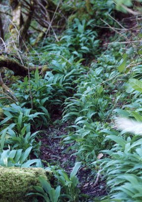
Wild Garlic

Meadowsweet
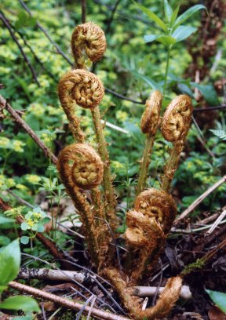
Fern Fronds
There are two quite interesting flowers in our woods here, one is quite rare, and the other very common, and they are both pink! The rare one is a parasitic plant which has no need of leaves, for it lives off the roots of hazel and other shrubby trees. It is called Toothwort, and I cant make up my mind whether it is so named because the flowers resemble (vaguely) teeth, or whether it may have been used to treat toothache at some time. The other flower is Butterbur, and in April it is at its best in damp woodlands. The leaves are said to have been used for wrapping butter to keep it cool.
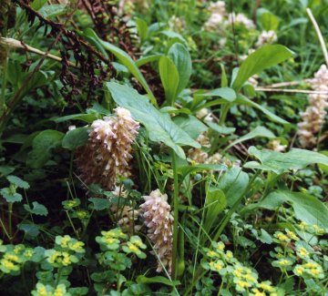
Toothwort
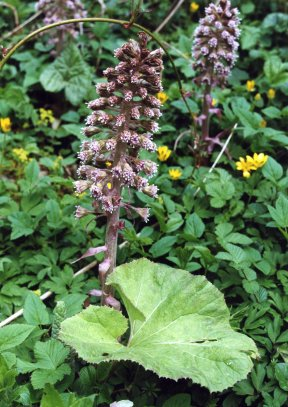
Butterbur
The month ends with a lot of new animal life in evidence -fields full of energetic lambs some quite young, others quite elderly - young rabbits darting about during the daylight hours, and newly hatched birds from the first clutch of eggs. Frogspawn laid a few weeks ago has changed into wriggling tadpoles, and already there are some butterflies hatching into the world or coming out of hibernation.

Peacock Butterfly
Very soon now, the swallows will be returning....................